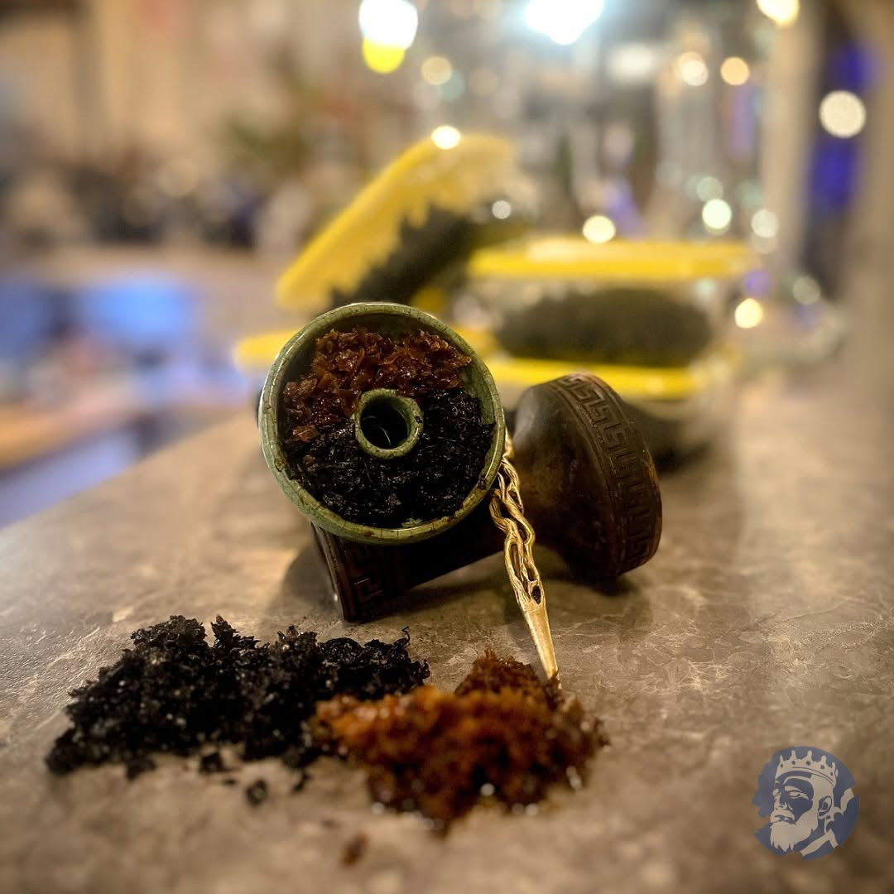
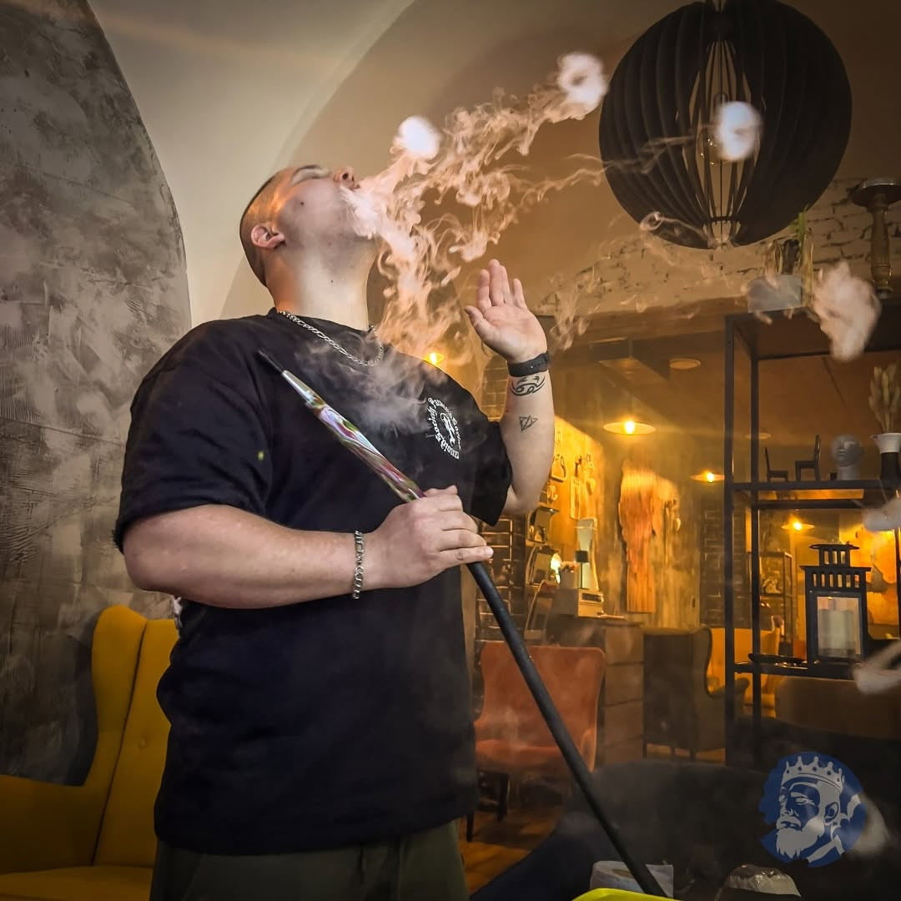

Базовий курс
Для повних новачків. Підеш із кальяном, який повністю приготував сам, і з розумінням, навіщо кожен крок.
- Тривалість
- 3 години
- Група
- 2 – 6 людей
- Підходить для
- повних початківців
- Ціна
- на запит
Три рівні
Рівні йдуть один за одним, але починати з початку не обов’язково. Якщо вже готуєш кальян удома, напиши нам, що вмієш — порадимо, звідки заходити.

Для повних новачків. Підеш із кальяном, який повністю приготував сам, і з розумінням, навіщо кожен крок.
Міксологія смаків і робота з темними тютюнами. Навчишся кальян налаштовувати, а не просто готувати.
Змагальні техніки, авторські рецептури і сервіс на рівні лаунж-бару. Для людей із галузі.
Зміст
Курс на дев’яносто відсотків практичний. Теорію беремо лише там, де без неї не зрозумієш, чому кальян гірчить або не тягне.
Ремесло
Чищення і гігієна всього комплекту, правильна забивка чаші, робота з фольгою і калаудом, розпалювання та ротація вугілля, щільність диму і що нею насправді керує.
Смак
Як складається смак, які ноти працюють разом, а які перебивають одна одну. Робота з фруктовою колбою, налаштування міцності під гостя і сервіс, який гість помічає аж тоді, коли його бракує.
Перебіг
Приклад тригодинного блоку. Просунуті курси мають ту саму логіку, лише більше часу на практику.
Розберемо кальян на частини. Покажемо, що миється після кожного гостя, а що раз на день — і що буде, якщо цього не зробити.
Заб’єш власну чашу під наглядом. Пройдемо щільність, висоту тютюну і різницю між фольгою та калаудом.
Розпалювання, розкладка і ротація. Навчишся розпізнавати, коли кальян перегрітий — ще до того, як він загірчить.
Змішаєш власний смак і приготуєш другу чашу. Цього разу вже сам — ми лише дивимось і виправляємо.
Сядемо до твого кальяну, пройдемо, що спрацювало, а що ні, і отримаєш список обладнання, яке варто купити додому.
Викладач

1 місце · Extreme Hookah Battle 2024
За баром стоїть людина, яка 2024 року виграла Worldwide Championship Extreme Hookah Battle, стала другою на Eurocup у Франкфурті і привезла звідти ще й приз глядацьких симпатій. Ті самі рецептури, з якими він змагався, сьогодні крутить у Трнаві.
За плечима має понад сімнадцять тисяч приготованих кальянів. На курсі ти отримаєш не теорію з інтернету, а прийоми, які мусять працювати в повному залі суботнього вечора.
Курси веде особисто — тому групи малі, а дати узгоджуємо індивідуально.
Часті запитання
Ні. Кальяни, тютюни, вугілля та інструмент у нас готові. Якщо маєш власний кальян і хочеш навчитися робити саме на ньому — принось, розберемо його особливості.
Ціна залежить від рівня курсу і кількості людей у групі. Напиши нам у WhatsApp, скільки вас і який курс цікавить — надішлемо конкретну пропозицію і вільні дати.
Так, видамо подарунковий сертифікат із дією дванадцять місяців. Отримувач сам домовиться про дату, коли йому зручно.
Можемо зробити закритий курс для групи — тімбілдинг, парубочий вечір або навчання персоналу закладу. Програму підлаштуємо під те, чого ви від неї чекаєте.
Після фахового курсу так — видамо підтвердження про проходження, яке стане в пригоді при влаштуванні на роботу в заклад. На базовому і просунутому курсі йдеться про досвід і навички, а не про папірець.
Бронювання
Напиши нам, який курс тебе цікавить і скільки вас. Надішлемо вільні дати й ціну.
Необхідні cookies ми використовуємо завжди, без них сайт не працював би. Анонімну статистику відвідуваності та вбудовану карту Google увімкнемо лише з твоєї згоди. Рішення можна змінити будь-коли.
Запам’ятовують обрану мову та це рішення про cookies. Вимкнути їх не можна, без них сайт не працював би.